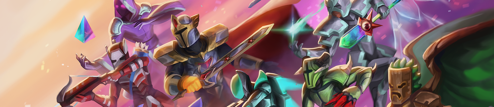
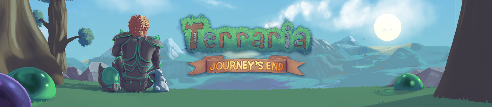
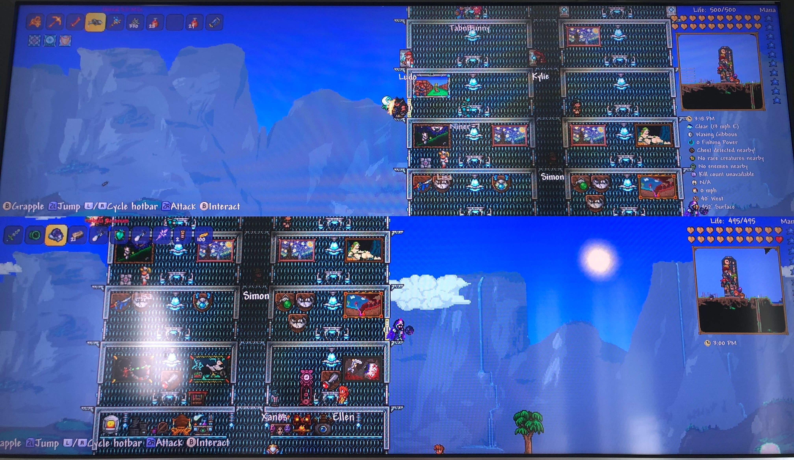

Террарии исполнилось 10лет!
И в связи с этим событием TERRARIA 1.4.2.3 ЗАПУСКАЕТСЯ СЕГОДНЯ!
Изменения:
- Добавлено праздничное семя
- Урон бонусного дебаффа комплекта Frost Armor исправлен с 20 до 25 DPS.
- Исправлены проблемы с рендерингом Vulkan и Metal, которые приводили к сбоям в сборках FNA.
- Исправлен определенный эксплойт.
- Исправлена отсутствующая подсказка в мешке с сокровищами Королевы Слаймов.
- Исправлена ошибка, из-за которой все типы лиан, кроме обычных и цветочных, не пропускали краску по мере того, как они становились длиннее.
- Исправлена ошибка, из-за которой шипастые миньоны King Slime могли собирать деньги и исчезать вместе с ними, как ранее миньоны Queen Slime.

Также Terraria продается со скидкой в стиме!
5 мая 2021 г.
Terraria Journey`s End доступна на телефоне!
Мобильные террарианцы, ваше время наконец пришло... добро пожаловать в «Конец путешествия»!

Первоначально выпущенный в мае 2020 года для ПК, Journey's End выводит Terraria на новый уровень, где основную игру, наконец, можно назвать «завершенной». От новых способов игры до более 1000 новых предметов, которые нужно найти и создать, до новых боссов, с которыми можно бросить вызов, и даже полного обзора всего контента игры на предмет баланса, качества графики и механики — действительно, в Journey's End есть что предложить. каждый. Нам не терпится увидеть вашу реакцию, когда вы погрузитесь во все, что может предложить это обновление, и мы надеемся, что вам полностью понравится наш подарок для вас. Это было действительно удивительное путешествие... но мы действительно чувствуем, что этот конец - просто новое начало для удивительного мира Террарии.
Но подождите, есть еще! Мобильные террарианцы одновременно получают обновления с 1.3.1 по 1.3.5. Правильно, сегодня вы получаете ШЕСТЬ обновлений в одном!
Итак, что вас ждет в Journey's End? А как насчет всего этого контента 1.3.1-1.3.5? Как вы можете себе представить, это ОГРОМНОЕ, что нужно повторить... поэтому мы предоставим вам краткий обзор вместе со ссылками на журналы изменений для ПК и статьи обзора конца путешествия, опубликованные ранее в этом году. Хотя некоторые вещи могут не совпадать 1:1 (например, различия в пользовательском интерфейсе/управлении), мы считаем, что это простой способ, по крайней мере, ознакомить вас с содержимым, которое у вас под рукой. Мы покроем некоторые различия, где сможем. Готовы наметить свое путешествие?
Terraria
14 октября 2020 г.
Terraria с разделенным экраном теперь запускается на Nintendo Switch
Разработчики рады сообщить нам о том, что последнее обновление для Nintendo Switch одобрено Nintendo и уже сегодня выйдет обновление с режимом разделенного экрана для двух игроков!
Наряду с этой долгожданной функцией появилось множество исправлений ошибок — как для режима разделенного экрана для двух игроков, так и для основного режима одиночной игры.

Чтобы начать свое приключение с разделенным экраном, вам понадобится второй парный набор элементов управления, и каждому игроку потребуется собственная учетная запись пользователя на Switch.
Инструкция:
- Первый игрок должен начать одиночную игру — выберите своего персонажа и мир, в котором вы хотите играть.
- Как только игра полностью загрузится, второй игрок должен взять свой контроллер и нажать кнопку A.
- Откроется меню выбора учетной записи пользователя. Затем второй игрок выбирает свою учетную запись пользователя.
- Выбрав свою учетную запись, второй игрок сможет выбрать любые файлы персонажей, привязанные к этой учетной записи (или создать новый, если у него их нет).
- Как только второй игрок выберет своего персонажа, он загрузится в игру... и вы с приятелем отправитесь в свои приключения в Terraria с разделенным экраном!
Все остальные элементы управления должны работать как в обычной игре, только с немного другим окном просмотра. Обратите внимание, что вы можете увеличивать/уменьшать масштаб так же, как и в одиночной игре (пауза, ZL/ZR), чтобы обеспечить лучшую видимость.
9 сентября 2020 г.